S01 Sign in and registration
Production identity, registration, recovery and staff SSO.
Full product design only; not implemented in the prototype.
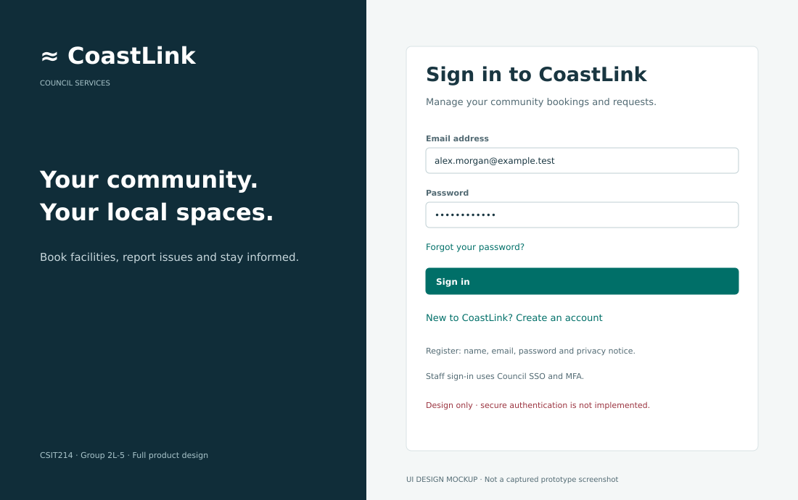
S02 Resident overview
Shortcuts, booking counts and recent activity.
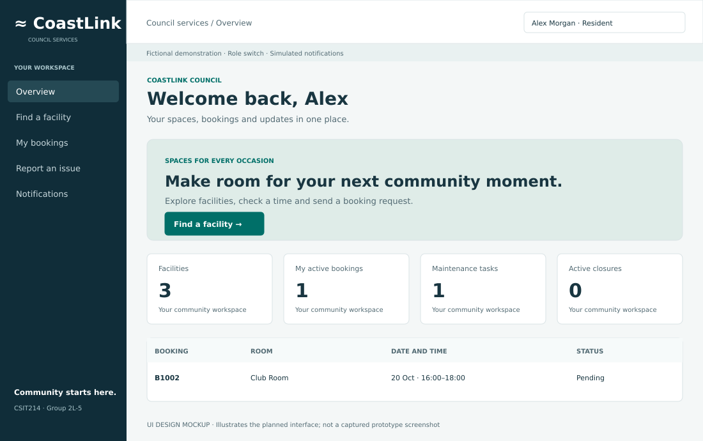
S03 Facility search
Search by facility, suburb, type and capacity.
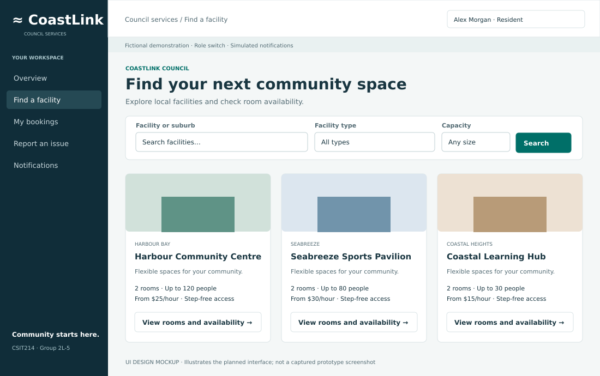
S04 Facility details and availability
Room capacities, fees, accessibility and availability.
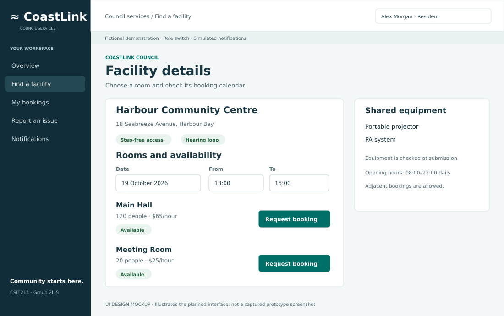
S05 Booking request form
Date, time, attendees, purpose and equipment with a fee estimate.
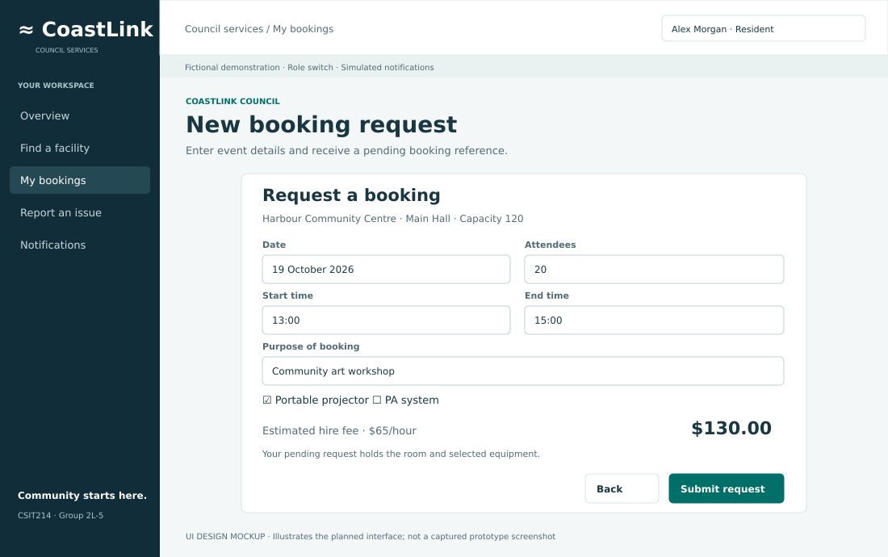
S06 Resident booking status
Booking details, status filters and cancellation feedback.
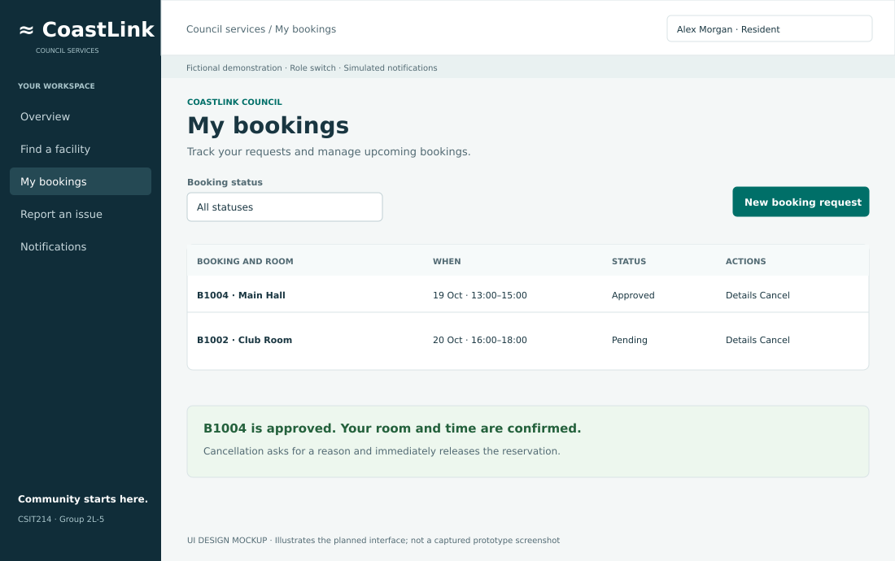
S07 Staff booking review
Approve or decline, with resident details and conflict rechecks.
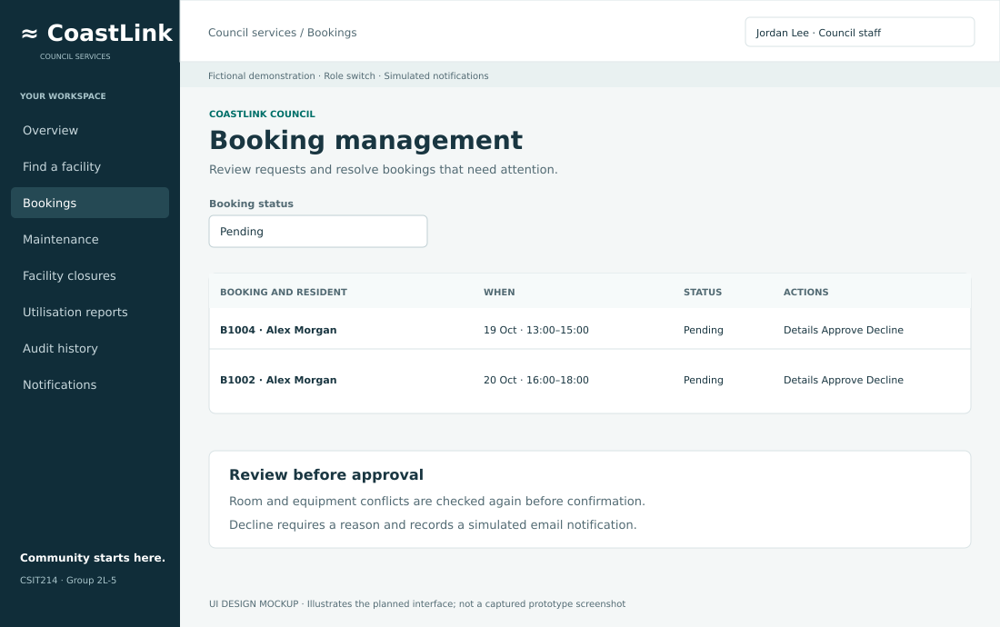
S08 Maintenance workspace
Issue reports, priorities, teams and task status.
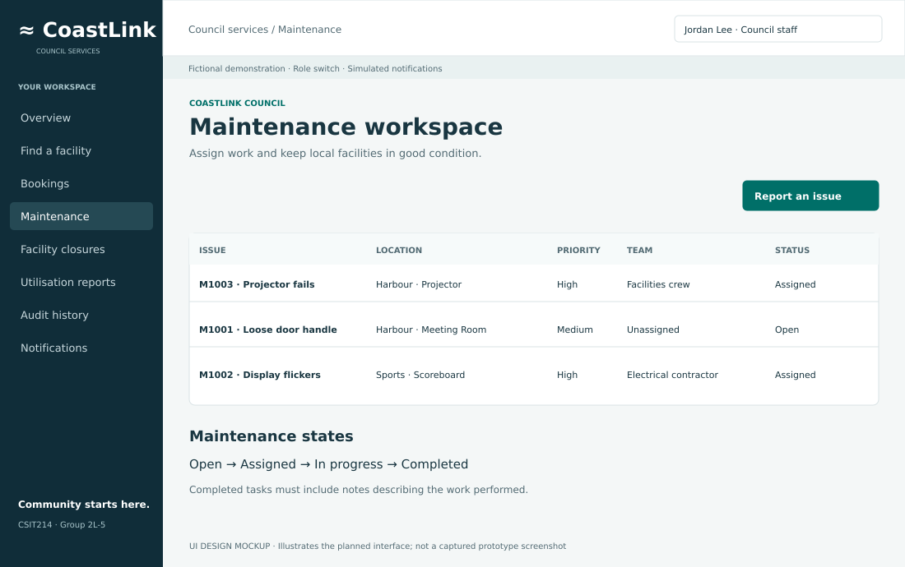
S09 Maintenance task detail
Assign, progress and complete a reported issue.
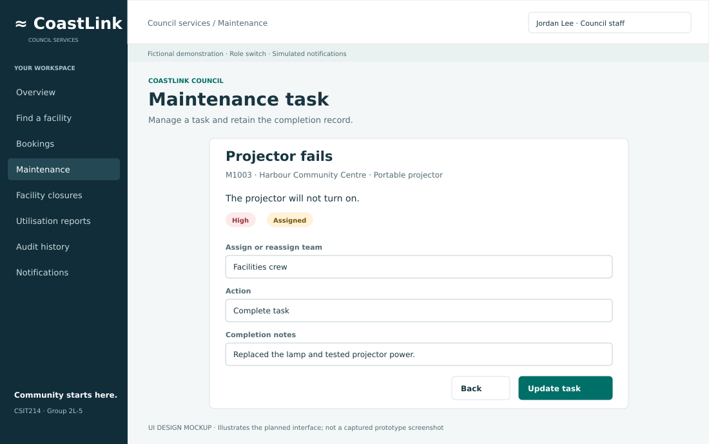
S10 Closures and affected bookings
Closure periods, impacted bookings and resolution actions.
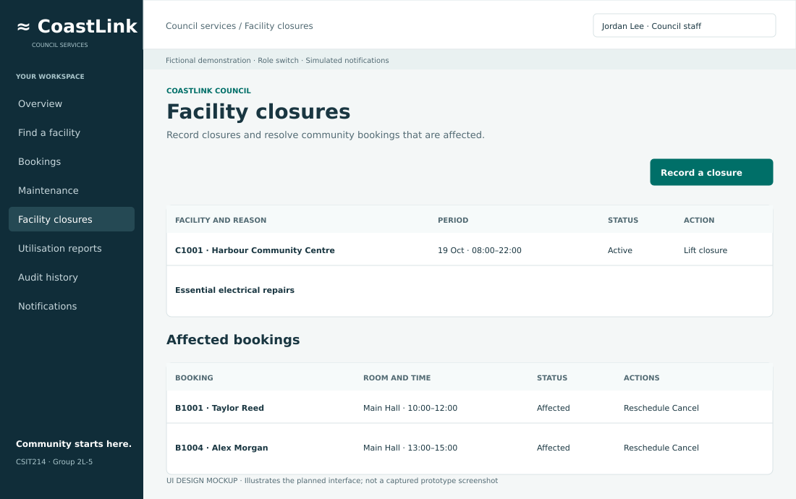
S11 Affected booking resolution
Move a booking to a valid slot or cancel with a reason.
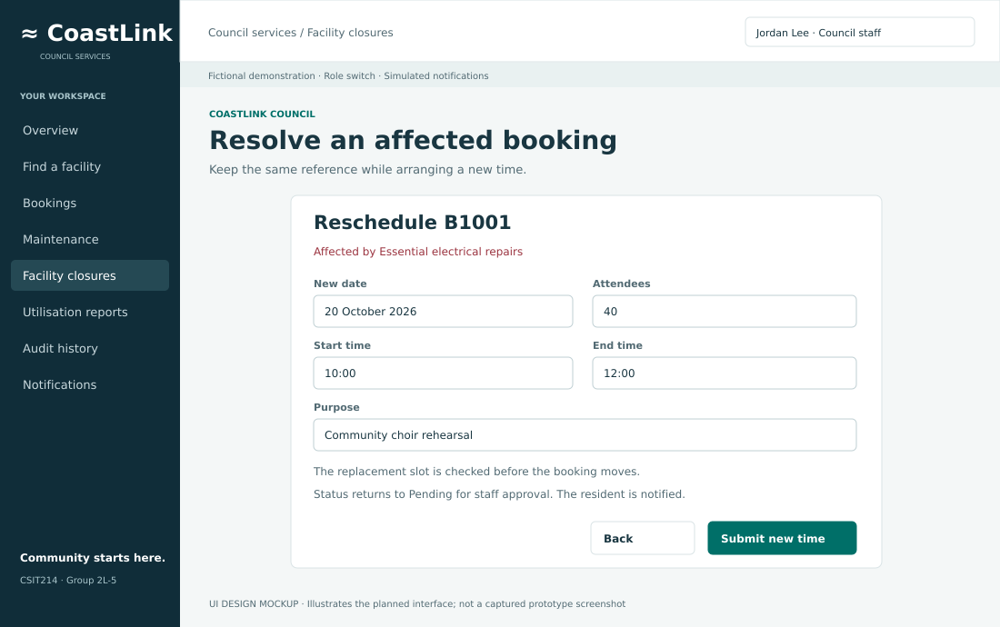
S12 Utilisation reporting
Date filters, usage, fee estimates and CSV export.
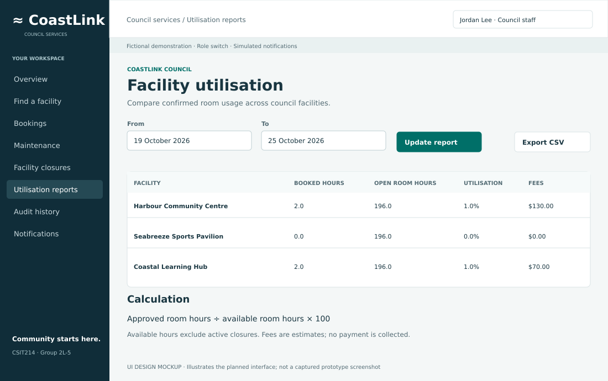
S13 Audit history
Searchable actions, responsible user and CSV export.
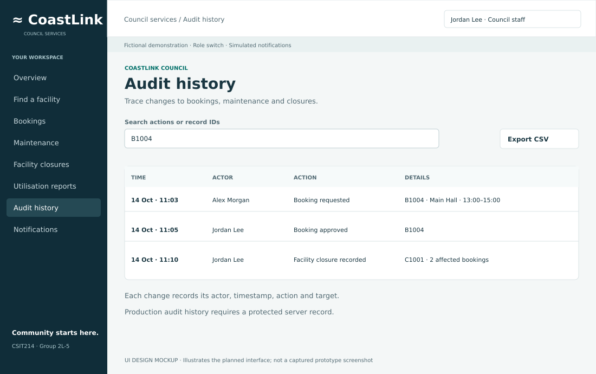
S14 Notifications
Recipient, booking reference and message for CR-01.
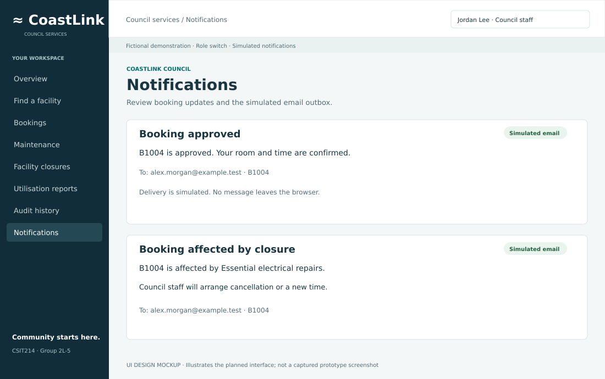
S15 Administration
Catalogue and role management; prototype edits room capacity and rate.
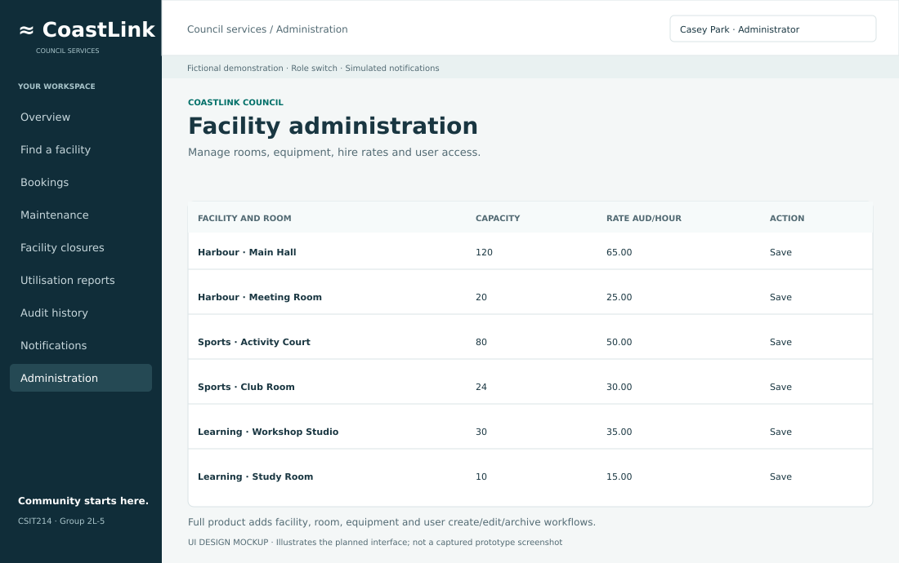
S16 Payment handoff and return
Production external payment flow with success and failure results.
Full product design only; not implemented in the prototype.
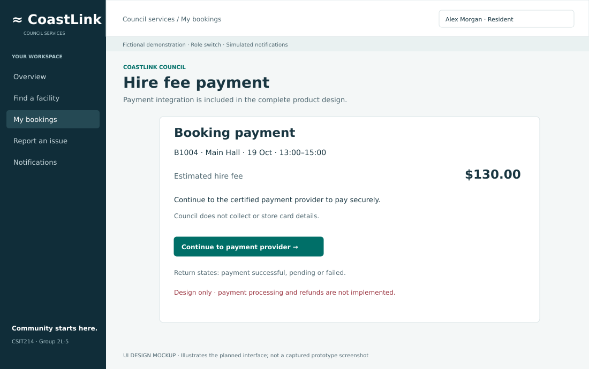